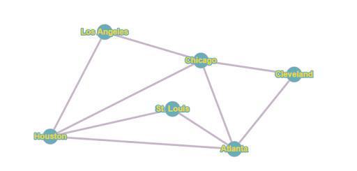

Many students are curious about exam performance in a class. Find all
the exams you’ve taken so far in this class. (If you start this project
before knowing all of your exam scores, just include the ones you
already know!)
List your exam scores as percentages that are rounded to the nearest
percent. For example, if you got an 80.3%, just use 80 as the data
value.
Percentages:55%, 79%, 61%, 86%, 75%
Find the mean, mode, and median of your exam scores (as percentages).
Mean: The Mean is 71.2%
Median: The Median is 75%
Mode: There is no mode.
Find the sample standard deviation of your scores (as percentages).
You must do this using the formula, etc., not technology.
Sample Standard Deviation: ≈ 12.85
Question 2:
A local Door Dash driver has a mean delivery time of 15.5 minutes and a
standard deviation of 2 minutes
Based on this, what percentage of delivery times are greater than 20
minutes? Use z scores and The Standard Normal table
About 1.22% of delivery times are greater than 20
minutes.
Based on this, if 2500 deliveries were made in the last month, how
many of them would you expect to have a delivery time greater than 20
minutes?
You would expect about 31 deliveries to have a time
greater than 20 minutes.
Question 3:
Consider the graph:

A UPS mail truck leaving from Chicago needs to make deliveries along
each route in the graph and then eventually return to Chicago. What
type of circuit or path needs to be found? Label the route on the
graph using proper notation.
A Euler Circuit, click here to see
the path or go to the answer sheet
Now, a UPS plane from Chicago needs to make a delivery to each city
and then return to Chicago. What type of circuit or path needs to be
found? Label the route on the graph using proper notation.
A Hamiltonian Circuit
Question 4:
A class president is being chosen in an election using the Borda Count
Method. The four candidates are Max, Karissa, Cassandra, and Holly. 1000
registered voters cast preference ballots. The results are summarized in
the preference schedule below. Who is the winner?
Number of Voters
Place
260
340
170
230
1st
K
M
M
K
2nd
C
C
H
H
3rd
H
H
C
C
4th
M
K
K
M
Answer: Cassandra (C) Wins with 2600 points
Question 5:
The Sonic Drive-In menu includes burgers, chicken, hot dogs, and ice
cream (amongst many other options!). Go to
https://order.sonicdrivein.com/
The number of choices changes regularly, as there are seasonal
offerings, etc.
Let’s use the following number of options for each:
Main Dish (Burgers, Chicken, & Hot Dogs) = 21
Sides = 9
Drinks (Sonic Rechargers with Red Bull, Slushes, Lemonades & Limeades,
Soft Drinks, Iced Tea, Coffee, & Other) = 53
How many different possibilities are there for a meal that includes
one main dish, one side, and one drink? Use the Fundamental Counting
Principle.
The total number of possibilities would be 10017.
You decide you should also choose a dessert (ice cream). The number of
choices changes regularly, as there are seasonal offerings, etc. Let’s
use the following number of options from the “Frozen Zone”:
How many different possibilities are there for a meal that includes
one main dish, one side, one drink, and one dessert (ice cream)?
Use the Fundamental Counting Principle.
A cleaning crew of two people has to complete the below tasks (times
given in hours). Use the list processing algorithm and the priority list
T7T1T4T5T2T3T6
to schedule the tasks.
Show the Gantt chart below (or attach it to the project)
and give the completion time. Is this an optimal
schedule for two people? Why or why not?
Let’s assume that your annual gross income is $80,000. Is the house
you chose within the maximum home price guideline?
Yes, our maximum home price is $240,000, since the house we are
looking to buy costs $179,900, the house is within the maximum home
price guidelines.
Even if it’s not within the maximum home price guideline, let’s assume
you decide to purchase it. You make a 20% down payment and finance the
balance with a 30 year mortgage at 4.25% interest. Use the monthly
payment formula to determine the monthly payment.
The monthly payment will be ≈ $708 a month.
Question 8:
The president of the United States is chosen using the electoral college
weighted voting system. With this system, each state (including
Washington D.C.) holds a certain number of electoral votes. For example,
Michigan has 15 electoral votes. When a candidate wins the popular vote
in a particular state, they are awarded the electoral votes for that
state (though Nebraska and Maine have different rules). Once a
presidential candidate receives a majority of the electoral votes, they
are declared the winner.
The following link shows the electoral votes that will be available for
all 50 states (plus Washington D.C.) for the 2028 presidential election.
Use the website to answer the questions that follow:
https://www.270towin.com/
According to the website, what is the total number of electoral votes
available?
According to the website there is 538 electoral votes that are
available.
What is the minimum number of votes required for a candidate to be
declared the president of the United States in 2028?
270 votes minimum is required.
Consider the coalition consisting of the following states: {Wisconsin,
Michigan, Indiana, Ohio, Pennsylvania, Texas, Florida, Georgia,
Missouri, North Carolina, Tennessee, Louisiana, Kentucky, Oklahoma,
South Carolina, Alabama, Montana, Nevada, Utah, Idaho, Wyoming, West
Virginia, Iowa, Oregon}
How many states are in this coalition?
24 states are in the coalition.
How many total electoral votes does this coalition hold?
The coalition has 277 electoral votes.
Is this a winning coalition?
Yes, the coalition should win by 7 votes.
Would Michigan be considered a “critical state” (critical voter) in
this coalition?
Yes, Michigan is worth 15 votes so if the coalition were to lose Michigan the coalition would be below 270 votes and will lose.
Which states would not be considered “critical states” (critical
voters) in this coalition?
Montana, Idaho, Nevada, Utah, West Virginia, Wyoming, Iowa, and Oklahoma are all non critical.